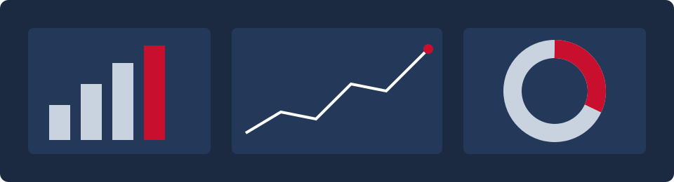

My Experience in Data and Finance

My work so far has focused on two areas that I care about: data engineering and finance. Each role taught me something different, and together they shaped how I think about using data to solve business problems.
My most recent data role was as a Solutions Engineering Co-op at VaultSpeed in Boston from January to June 2026. I built technical proofs of concept and industry demo environments, and I worked on Data Vault 2.0 modeling on Snowflake and Databricks. I led the finance industry demo, which was used in a live engagement with Ageas, a European insurance group that then moved forward with a proof of concept.
After that I joined ProfitGate Capital Services, a portfolio management firm, as an Equity Research Intern. I did buy side research on small cap and mid cap stocks. I also built a roadmap for turning my family's warehousing business into a small and medium REIT.
Earlier, I was a Data Analytics Intern at TechPaathshala in Mumbai, where I built ETL pipelines and Power BI dashboards, designed SQL schemas, and automated an HR salary and bonus workflow. My first internship was at Cricziner, a real time cricket analytics platform, where I worked on data ingestion and backend performance.
Tools I Have Worked With
- Python and Jupyter notebooks
- SQL and schema design
- ETL pipelines
- Power BI dashboards
- Snowflake
- Databricks
- Data Vault 2.0 modeling
- Equity research
Timeline of My Roles
Each bar shows when I held a role. Hover over a bar to see the role and dates.